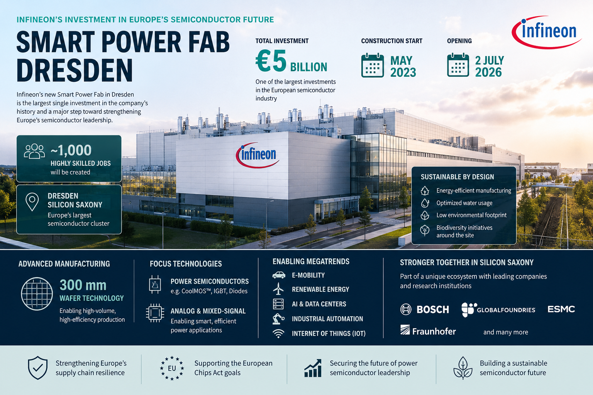
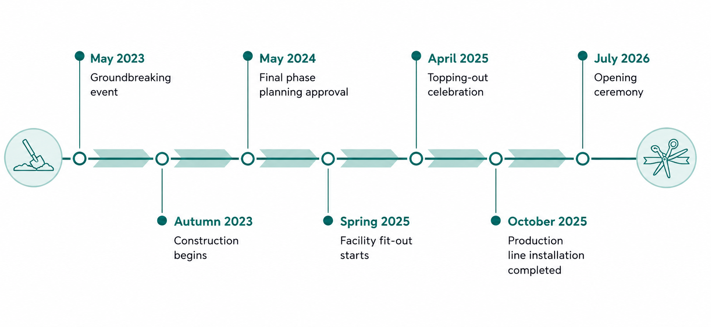
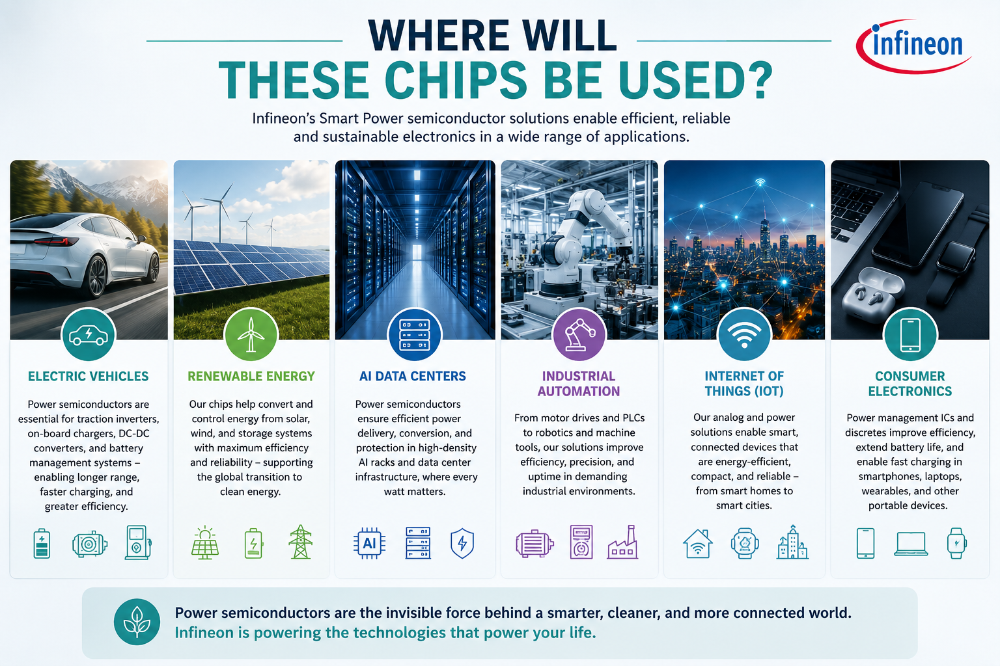

Infineon's Smart Power Fab: The €5 Billion Bet on Europe's Semiconductor Future
Europe's newest 300mm power semiconductor fab strengthens regional manufacturing resilience while expanding capacity for automotive, industrial, AI, and energy applications.

The semiconductor industry has quietly become one of the world's most strategic industries. From electric vehicles and AI data centers to renewable energy and industrial automation, almost every technology shaping the future depends on an uninterrupted supply of advanced chips. Yet recent supply chain disruptions exposed a critical weakness: much of the world's semiconductor manufacturing is concentrated in only a handful of regions.
Europe has spent the last few years trying to change that.
One of its boldest investments officially opens on 2 July 2026, when Infineon inaugurates its new Smart Power Fab in Dresden, Germany. Built in just three years and backed by an investment of €5 billion, the facility is the largest single investment in Infineon's history and one of the most important semiconductor manufacturing projects currently operating in Europe.

Development timeline of Infineon's Smart Power Fab (adapted from Infineon Technologies).
More Than Another Semiconductor Fab
Unlike the cutting-edge logic fabs that dominate headlines with ever-smaller transistor nodes, Infineon's Smart Power Fab focuses on something arguably just as important: power semiconductors.
If AI processors are often described as the "brains" of modern electronics, power semiconductors are the heart of every electrical system, controlling how energy is converted, distributed, and used. Every electric vehicle acceleration, every solar inverter converting sunlight into usable electricity, every industrial robot, and every AI server drawing hundreds of kilowatts of power depends on these devices operating efficiently.
Even a small improvement in power conversion efficiency can translate into enormous energy savings when multiplied across millions of vehicles, factories, and data centers worldwide.
That is why demand for power semiconductors is growing rapidly and why manufacturing capacity has become increasingly valuable.
Built in the Heart of Silicon Saxony
The new Smart Power Fab is located in Silicon Saxony, Europe's largest semiconductor cluster and home to one of the highest concentrations of chip manufacturing facilities in the world.
The Dresden ecosystem already includes major industry players such as Bosch, GlobalFoundries, ESMC, X-FAB, and multiple research institutes. Together, these companies create an environment where research, manufacturing, equipment suppliers, and skilled talent coexist within a few kilometers of one another.
Rather than building in isolation, Infineon is expanding an ecosystem that has taken decades to develop.
Why 300mm Wafers?
The Smart Power Fab will manufacture advanced 300mm wafers, representing a major leap in manufacturing productivity for power semiconductor devices.
Compared with traditional 200mm production, a 300mm wafer offers approximately 2.25 times more surface area, allowing significantly more chips to be produced from each manufacturing cycle while lowering cost per device. For high-volume applications such as automotive electronics and renewable energy systems, these manufacturing efficiencies become increasingly important as global demand continues to rise.

The facility will manufacture advanced power semiconductor and analog/mixed-signal devices used in electric vehicles, renewable energy systems, AI data centers, industrial automation, smart factories, and Internet of Things (IoT) devices.
Although these products rarely receive the attention given to AI accelerators or smartphone processors, they enable nearly every electronic system that requires efficient and reliable power management.
Strengthening Europe's Semiconductor Supply Chain
The COVID-19 semiconductor shortage demonstrated that manufacturing capacity is no longer just an economic asset but is strategic infrastructure. Automotive production lines were forced to stop, consumer electronics faced lengthy delays, and governments worldwide began reassessing the risks of relying heavily on overseas semiconductor manufacturing.
Projects such as Infineon's Smart Power Fab directly address this challenge. By expanding wafer fabrication capacity within Europe, the facility improves supply chain resilience for industries that increasingly depend on secure access to advanced semiconductor technologies.
This investment also supports the broader ambitions of the European Chips Act, which seeks to strengthen Europe's position in global semiconductor manufacturing while reducing dependence on external suppliers.
Manufacturing with Sustainability in Mind
Semiconductor fabrication is one of the most resource-intensive manufacturing processes in the world, requiring enormous quantities of ultra-pure water, electricity, and process chemicals. Recognizing this challenge, sustainability was incorporated into the Smart Power Fab from the beginning.
The facility has been designed to reduce energy consumption, optimize water usage, and minimize its environmental footprint through highly efficient manufacturing systems. Infineon is also investing in biodiversity projects surrounding the site, demonstrating that future semiconductor manufacturing must balance technological progress with environmental responsibility.
As demand for semiconductors continues to grow, improving the sustainability of chip manufacturing will become just as important as increasing production capacity.
Looking Ahead
The Smart Power Fab represents far more than another semiconductor manufacturing facility.
It reflects a broader shift in how governments and industry now view semiconductor manufacturing. It is not simply as an industrial activity, but a critical infrastructure underpinning economic competitiveness, technological leadership, and national resilience.
The project is expected to create around 1,000 highly skilled jobs, further strengthening Dresden's position as one of Europe's premier semiconductor hubs while expanding the region's world-class engineering ecosystem.
For Infineon, the Smart Power Fab is its largest investment to date. For Europe, it is another important step towards a more resilient semiconductor supply chain. And for the global electronics industry, it is a reminder that the future of computing is not determined solely by faster processors but also by the power semiconductor technologies that make every watt count.
Comments and reactions